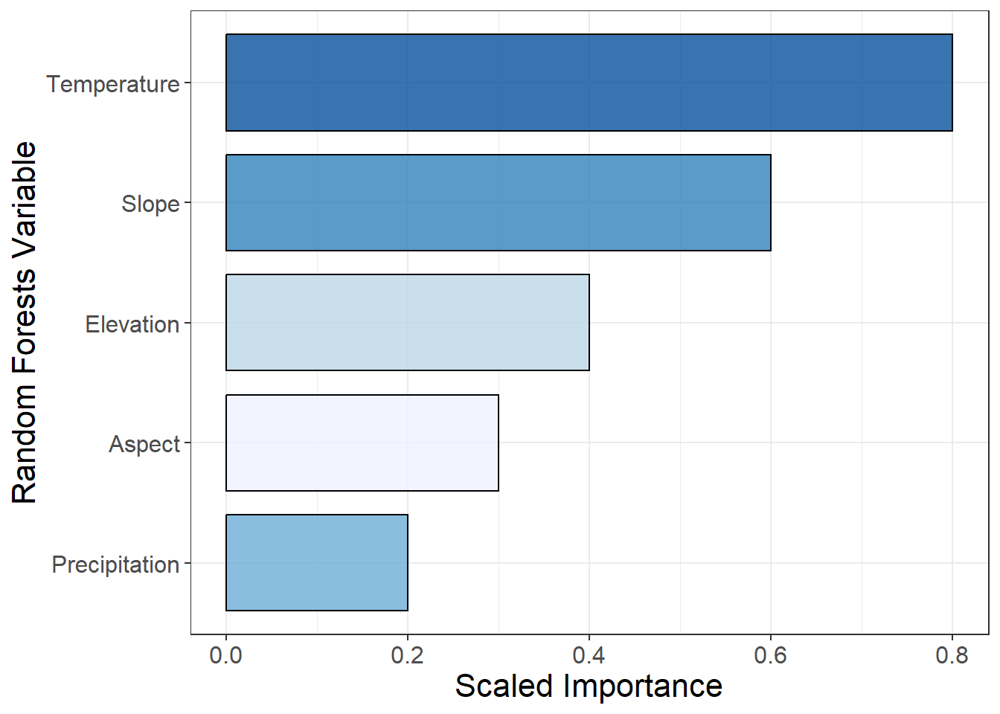

In this workshop module you will learn how to set up different types of plots (scatterplot, barplot, boxplot, multi-panel plots) and customize them using the aesthetics, legend and theme parameters. We will also discuss what makes a show-stopping figure that is ready to publish.
Key principles for scientific figures:
Make the data the focus of the figure and reduce unused space
Avoid unnecessary elements or distractions - simplify axes, grid lines and legends where possible
Text and labels should be large enough to be read easily at a glance
Use appealing and color-blind friendly pallets (not the ggplot default colors please!)
Make sure to export figures as high resolution images (at least dpi = 300) with appropriate dimensions
Scatterplot
We can use the built in iris dataset to build a simple scatterplot between Sepal.Length and Sepal.Width. We use the color parameter to create groups by Species.
### FUGLY ggplot(aes(x = Sepal.Length, y = Sepal.Width, color = Species), data = iris) +# The color parameter defines groups in the data and uses a different color for each groupgeom_point() +# aesthetics are "inherited" from the first ggplot() line geom_smooth(method ="lm") # fit a linear model through each group of "Species"
Using a few extra parameters we can make the plot look a lot nicer. The essentials:
xlab & ylab: Define x and y-labels instead of default variable names
alpha: Controls the transparency of points, lines or polygons. It varies between 0 and 1 - with values closer to 0 being more transparent. This is important when you have overlapping elements on a plot.
theme_classic or theme_bw: Removes the default grey background from the plot and goes a long way in tidying up the figure. theme_classic removes gridlines but theme_bw does not.
theme: We can control many different aspects of how the plot looks. In particular we should make the axis and legend text bigger using element_text() and specifying a font size. We can also change the font face and type.
ggplot(aes(x = Sepal.Length, y = Sepal.Width, color = Species), data = iris) +geom_point(alpha =0.5, size =2)+## adjust point size and transparency xlab("Sepal Width (cm)") +## set x and y labels ylab("Sepal Length (cm)") +geom_smooth(method ="lm") +theme_classic() +## a nice theme that removes the grey background and graticulestheme(axis.text =element_text(size =14), ## font size of legend/axis axis.title =element_text(size =16),legend.text =element_text(size =14),legend.title =element_text(size =16),legend.position ="bottom")
This plot is getting closer - but there are sill issues with the legend. Notice how the legend includes the grey fill and how points inherit the transparency from the alpha = 0.5 argument. The base ggplot colors are also a little tacky.
We can use scale_color_manual and scale_fill_manual to set the colors of the points and standard error ribbons. The online R Color picker allows you to easily copy and paste codes for all R colors! To clean up the legend we can also remove the line and fill information and override the point transparency.
ggplot(aes(x = Sepal.Length, y = Sepal.Width, color = Species, fill = Species), data = iris) +geom_point(alpha =0.5, size =2) +scale_color_manual(name ="", values =c("slateblue", "skyblue1", "steelblue4")) +# manually set the point colors and remove "Species" from the legend scale_fill_manual(name ="", values =c("slateblue", "skyblue1", "steelblue4")) +# the standard error around the lines is controlled by the "fill" scale_x_continuous(breaks =seq(1, 8, by =0.5))+# set the x-axis breakpointsxlab("Sepal Width (cm)") +ylab("Sepal Length (cm)") +geom_smooth(alpha =0.2, linewidth =0.75, method ="lm", show.legend =FALSE)+# adjust the transparency and size of the lines and remove the fill from the legendtheme_classic() +guides(colour =guide_legend(override.aes =list(alpha =1))) +# override the point transparency in the legendtheme(axis.text =element_text(size =14),axis.title =element_text(size =16),legend.text =element_text(size =14, face ="italic"), # add italics for species names legend.title =element_text(size =16),legend.position ="bottom")
This plot is looking pretty good! But if we are plotting multiple groups of data we might want to consider using a multi-panel plot for each group. This is easy to set up using facet_wrap(~Species). facet_wrap() is very flexible and some of the key arguments include:
scales: Do you want all panels to have the same x and y axis range? The default is fixed but scales = free finds the min/max values for each group in the plot.
nrow and ncol: Set the number of rows and columns.
labeller: Controls the text label of each panel. You can change the size and font of the label in theme() using theme(strip.text = element_text()) .
# Multi-panel plot ggplot(aes(x = Sepal.Length, y = Sepal.Width, color = Species, fill = Species), data = iris) +facet_wrap(~Species, scales ="free") +# plot by Species and set different x-axes for each plot (alternative is scales = "fixed")geom_point(alpha =0.5, size =3) +scale_color_manual(name ="", values =c("slateblue", "skyblue1", "steelblue4")) +scale_fill_manual(name ="", values =c("slateblue", "skyblue1", "steelblue4")) +scale_x_continuous(breaks =seq(1, 8, by =0.5))+xlab("Sepal Width (cm)") +ylab("Sepal Length (cm)") +geom_smooth(alpha =0.2, method ="lm", linewidth =0.75) +theme_classic() +theme(axis.text =element_text(size =11),axis.title =element_text(size =16),strip.text =element_text(size =14, face ="italic"),legend.position ="none") # remove the legend
Figure 1: Linear relationships between sepal length and width (cm) by iris species. The shaded area shows the standard error around the fitted trend.
Boxplots
Boxplots can be used to show the distribution of numeric data between different groups. We will use the diamonds dataset within the ggplot2 package to show how diamond price differs among cut and clarity categories.
head(diamonds)
# A tibble: 6 × 10
carat cut color clarity depth table price x y z
<dbl> <ord> <ord> <ord> <dbl> <dbl> <int> <dbl> <dbl> <dbl>
1 0.23 Ideal E SI2 61.5 55 326 3.95 3.98 2.43
2 0.21 Premium E SI1 59.8 61 326 3.89 3.84 2.31
3 0.23 Good E VS1 56.9 65 327 4.05 4.07 2.31
4 0.29 Premium I VS2 62.4 58 334 4.2 4.23 2.63
5 0.31 Good J SI2 63.3 58 335 4.34 4.35 2.75
6 0.24 Very Good J VVS2 62.8 57 336 3.94 3.96 2.48
ggplot(aes(x = cut, y = price), data = diamonds) +geom_boxplot()
Using the fill argument we can color the boxplots by categories of cut. scale_fill_brewer() can be used to select predefined color palettes by name.
ggplot(aes(x = cut, y = price, fill = cut), data = diamonds) +geom_boxplot(alpha =0.8, outlier.alpha =0.05, outlier.size =2)+# adjust the size and transparency of the outliers - we could also remove them completely using alpha = 0 scale_fill_brewer(palette ="Blues")+# use "brewer" for set color palettes xlab("Cut")+ylab("Price (USD)")+theme_classic()+theme(axis.text =element_text(size =12),axis.title =element_text(size =16),legend.position ="none")
If we want to create grouped barplots we just need to use the fill argument to define a second grouping variable - in this case clarity.
ggplot(aes(x = cut, y = price, fill = clarity), data = diamonds) +# use the fill argument to group by a second categorygeom_boxplot(alpha =0.6, outlier.alpha =0.05) +scale_fill_brewer(palette ="Spectral") +xlab("Cut") +ylab("Price (USD)") +theme_classic() +theme(axis.text =element_text(size =11),axis.title =element_text(size =16),legend.position ="right")
Density plots
An alternative to boxplots, density plots also show the distribution of numeric variables by estimating a probability density function. In a density plot the area under the curve sums to 1 with “peaks”represnting x-values that are more likely to occur. You can think of it like we are “smoothing” out the bars of a typical frequency histogram to create a continuous line. These plots are especially good for displaying data that is not normally distributed. Note that violin plots are ugly and should never be used.
The figure below shows a frequency histogram with the probability density function plotted on top.
library(dplyr)diamonds %>%filter(clarity =="I1") %>%# filter one level of clarity for plotting and pass the filtered dataset into ggplotggplot(aes(x = price/1000, y = ..density..))+# scale price to 1000's of USDgeom_histogram(binwidth =1, color ="black", alpha =0.3)+# alpha controls the transparency of the fill geom_density(color ="blue",linewidth =0.8, alpha =0.8)+xlab("Price (1000 USD)")+ylab("Density")+theme_classic()+theme(axis.text =element_text(size =11),axis.title =element_text(size =16))
Density plots can be used to compare the distribution of multiple groups. The fill parameter specifies the color of the area under the curve. Setting alpha to a relatively low value ensures that the plots do not block each other.
We can change the title and the names of the groups in the legend we when we set the color scheme using scale_fill_manual() or scale_color_manual().
name: Defines the title of the legend
values: Defines the colors
labels: We can pass a vector of strings (one for each factor level) to specify the group names.
diamonds %>%filter(clarity =="I1"| clarity =="VVS2") %>%# filter two levels of clarityggplot(aes(x = price/1000, fill = clarity, color = clarity))+# scale the price in terms of 1000's of dollarsgeom_density(alpha =0.4, linewidth =0.1)+#adjust transparency and color of the density plotsscale_fill_manual(name ="Clarity", values =c("#FFB90F", "#00BFFF"))+# define color and fill for each level of "clarity"scale_color_manual(name ="Clarity", values =c("#FFB90F", "#00BFFF"))+geom_vline(xintercept =3.20, linetype ="dashed", color ="#FFB90F")+# add vertical lines to show peaks in the datageom_vline(xintercept =0.83, linetype ="dashed", color ="#00BFFF")+xlab("Price (1000 USD)")+ylab("Density")+theme_bw()+theme(axis.text =element_text(size =11),axis.title =element_text(size =16),legend.position ="bottom")
We can also use the ggridges package to stack multiple density plots vertically and compare the distribution of many groups at once.
library(ggridges)ggplot(aes(x = price, y = clarity, fill = clarity), data = diamonds)+geom_density_ridges2(quantile_lines =TRUE, quantiles =2, alpha =0.5, linewidth =0.2)+xlim(c(0, 10000))+xlab("Price (USD)")+ylab("Clarity")+theme_bw()+theme(legend.position ="none")+theme(axis.text =element_text(size =11),axis.title =element_text(size =16))
Barplots
We can use barplots to compare the frequency or counts of groups within data. When we use geom_bar() we provide an x value representing the variable we want to count. We can count the frequency of different types of cars using the mpg dataset. The height of the bar represents the number of rows within each class.
library(ggplot2)head(mpg)
# A tibble: 6 × 11
manufacturer model displ year cyl trans drv cty hwy fl class
<chr> <chr> <dbl> <int> <int> <chr> <chr> <int> <int> <chr> <chr>
1 audi a4 1.8 1999 4 auto(l5) f 18 29 p compa…
2 audi a4 1.8 1999 4 manual(m5) f 21 29 p compa…
3 audi a4 2 2008 4 manual(m6) f 20 31 p compa…
4 audi a4 2 2008 4 auto(av) f 21 30 p compa…
5 audi a4 2.8 1999 6 auto(l5) f 16 26 p compa…
6 audi a4 2.8 1999 6 manual(m5) f 18 26 p compa…
ggplot(aes(x = class, fill = class), data = mpg)+geom_bar(alpha =0.8, color ="black")+scale_fill_brewer(palette ='Reds')+xlab("Class")+ylab("Count")+theme_bw()+theme(legend.position ="none")+theme(axis.text =element_text(size =11),axis.title =element_text(size =16))
A stacked barplot can show the frequency of groups within groups using the fill parameter and defining a second grouping variable.
We can also use the labels() argument in scale_fill_brewer() to change the group labels in the legend.
ggplot(aes(x = class, fill = drv), data = mpg)+geom_bar(alpha =0.8, color ="black")+scale_fill_brewer(palette ='Spectral', name ="Drive Type", labels =c("4 wheel", "Front", "Rear"))+# set the color palette and change the legend name and labels for each group xlab("Class")+ylab("Count")+theme_bw()+theme(legend.position ="bottom")+theme(axis.text =element_text(size =12),axis.title =element_text(size =16),legend.text =element_text(size =12))
Sometimes instead of counting rows within a dataset we already have a summary statistic or value calculated and we want to the height of the bar to represent this value, rather than a count. We can define the height of the bar using y in the aes() parameters and changing the statistic type to “identity” (which means the values are not aggregated into counts before plotting). This can be achieved using geom_col() in or geom_bar(stat = "identity") .
This example shows a Variable Importance plot from a Random Forests model displayed as a barplot. We have reordered the levels of Variable by Importance so that the variables with the greatest importance are plotted first. coord_flip() rotates the plot 90 degrees.
# make some sample variable importance data dt =data.frame(Variable =c("Temperature", "Precipitation", "Slope", "Aspect", "Elevation"), Importance =c(0.8, 0.2, 0.6, 0.3, 0.4))ggplot(aes(x =reorder(Variable, Importance), y = Importance, fill = Variable), data = dt)+geom_bar(stat ="identity", color ="black", alpha =0.8, width =0.8)+coord_flip()+scale_fill_brewer(palette ="Blues")+ylab("Scaled Importance")+xlab("Random Forests Variable")+theme_bw()+theme(axis.text =element_text(size =12),axis.title =element_text(size =16),legend.position ="none")

Exporting figures from R
Now that you have made some beautiful ggplot figures it is time to export them as high quality images! Do not take a screenshot of the R plotting window and submit it! There are two methods shown below the key parameters are:
res or dpi: Resolution of the image - should be 300 dpi (dots per pixel)
height and width: Dimensions of the figure in units you define (“inches” in the example)
You should look at your figure after exporting it and experiment with different dimensions to make sure that everything is visible and scaled correctly. If parts of the figure are cut off you can increase the dimensions or make text size smaller.
# define plotyour_plot =ggplot(aes(x = Sepal.Length, y = Sepal.Width, color = Species), data = iris)+geom_point()## Export a high resolution .png of the plot ## You will want to experiment with the height/width to get the best dimensionspng("filepath_here.png", height =4, width =8, units ="in", res =300)your_plotdev.off()## Using ggsave()ggsave(filename ="filepath_here.png", your_plot, height =4, width =8, units ="in", dpi =300)
Here are two examples of the same plot exported with different height/width dimensions:
Height = 4in, Width = 8in
Height = 4in, Width = 4in
Exercises
Try to recreate the following plots! Links to data descriptions included.
Using the midwest dataset from the ggplot2 package: